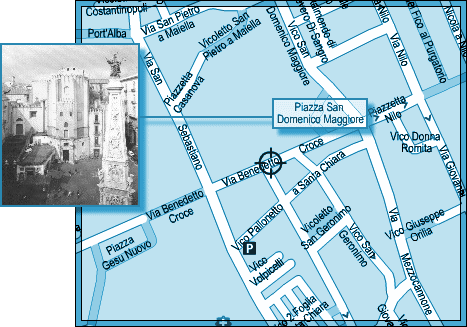
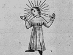

L'ICPA est une association privée créée par des amis et des collègues du journaliste Jack Lorski au lendemain de l'annonce de son meurtre en Écosse. Son seul but est d'aider les services de police et de justice internationaux à mettre fin le plus tôt possible aux agissements criminels du Phoenix.
SKL NETWORK est l'agence qui employait Jack Lorski. Elle a reçu et rendu public les deux CD-Roms envoyés par le Phoenix.
LIBERATION.FR a publié plusieurs articles sur l'affaire du Phoenix. Utilisez son moteur de recherches pour accéder à ses archives.
VICTIME N°1 : GIANNI MAGGIOLI
- IDENTITÉ
Gianni Maggioli habitait Naples. Il était le fils de Felice Maggioli, cadre dirigeant des Cimenteries Maccioni. Il était membre laïc de Manus Domini.
- PHOTO
- DATE ET LIEU DU CRIME
Le 20 novembre 2001, le corps de Gianni Maggioli est retrouvé par Massimo Palacci, conducteur de bus du réseau urbain de Naples. Le cadavre a été déposé au 18 via Benedetto Croce, tout près de la Piazza San Domenico Maggiore. - AUTOPSIE
Gianni Maggioli a été tué d'une balle dans la tête. Des brûlures sous forme de cercles ont été observées sur la paume de ses mains et sur son front. - ANALYSE
Gianni Maggioli est la première victime connue du Phoenix. Le tueur l'a d'abord choisi parce qu'il était membre de Manus Domini, condition sine qua non de sa vengeance contre cette société secrète.
Afin de respecter son rituel lié au parcours européen de son maître à penser, Giordano Bruno, le Phoenix a également choisi Gianni Maggioli parce qu'il était napolitain. En effet, c'est précisement au couvent dominicain San Domenico di Maggiore de Naples que Giordano Bruno effectue ses études de théologie, entre 1565 et 1573. C'est aussi à Naples qu'il se heurte pour la première fois à la hiérarchie catholique : En 1576, le frère Montalcino Domenico Vita l'accuse d'hérésie à cause de son intérêt pour Erasme, ce qui l'oblige finalement à abandonner l'habit et à fuir la ville.
Toujours en référence à son maître, le Phoenix a signé son crime en associant Gianni Maggioli à Sol (le soleil), le huitième principe élémentaire de la magie brunienne (De imaginum idearum compositione, 1591) :L'image du soleil (appelé l'½il du monde, lampe, père gardien attentif, semeur et serviteur) est un ½il qui regarde dans toutes les directions, observant et nous permettant de voir partout comme si nous étions une tête, un globe, un ½il complet ; une image noble, matérielle de Dieu qui peut voir simultanément le passé, le présent et le futur. Tout autour de lui, dans toutes les directions, rayonnent lumière, chaleur et apparence de paix. - COMMENTAIRE DU PHOENIX
• « Premier sacrifié. Il est mort sans comprendre, les yeux fixés vers le soleil noir. » - DOCUMENT
• Article d'un journal italien relatant la découverte du corps de Gianni Maggioli
« Un homme a été tué cette nuit et son cadavre jeté sur le trottoir de Benedetto Croce. Le corps a été découvert à 6 heures 15, par un locataire du 18 de la rue. Le jeune Massimo Palacci, 25 ans, conducteur d'autobus, se rendait au terminus pour prendre son travail lorsque il a achoppé sur le corps de l'inconnu. Il a appelé la police sur son portable et a attendu les premiers secours. Les policiers accourus sur les lieux ont immédiatement bouclé le périmètre pour préserver les indices qui pouvaient se trouver sur les lieux. Selon les témoins rares que nous avons pu questionner, la victime aurait été tuée d'une balle dans la tête. Des brûlures sous forme de cercle ont été observées sur la paume des mains et sur le front de la victime. En croyant tout d'abord à un règlement de compte entre bandes rivales, la police est pour le moins perplexe face à ces premiers éléments qui ne correspondent pas aux pratiques habituelles de la Camorra. Retenu pendant plusieurs heures par la police qui le suspectait du crime, Massimo Palacci a été innocenté par le témoignage d'une femme avec qui il avait passé la nuit et dont il n'avait d'abord pas voulu révéler l'identité. »
- LIENS
• Site des cimenteries Maccioni
• Site du Messini Yacht Club
• Blog de Dario Sabelli